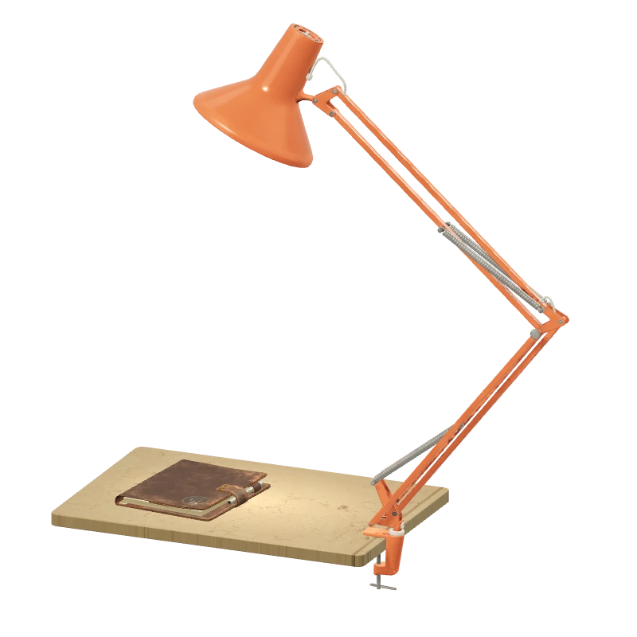
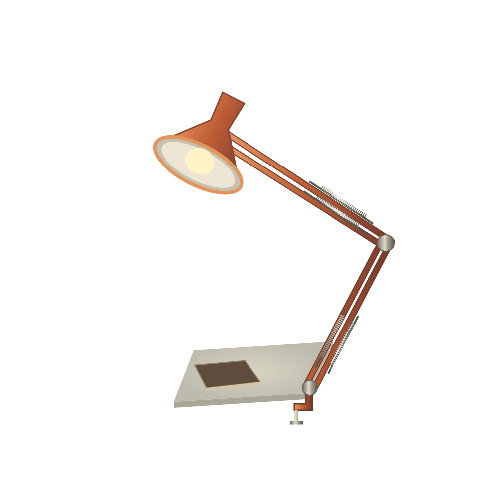

OBJECTS FOR THE UNHURRIED.VOL. 01 · THE DESK LIGHT
lento.
A little warmth. A little wonder.
A light that feels like good company.

Light for
the slower hours.
01 / A DIFFERENT PERSPECTIVE
An everyday object.
A different feeling.
Some things do more than light a room.
They change the way it feels.
02 / THOUGHTFULLY SIMPLE
Good things.
In the details.
A shaped reflector, balanced arms, a reassuring grip. Springs, pivots and little traces of use. Every detail has a purpose.
- 01
A focused glow
A metal reflector gathers the light into a warm pool.
- 02
A little balance
Paired springs and articulated arms hold the light in place.
- 03
A steady grip
A screw clamp anchors the lamp to the edge of your desk.
03 / A LITTLE MORE YOU
Your corner.
Your kind of glow.
Choose a colour. Turn down the day.
Make a small moment your own.
04 / THAT’S THE FEELING